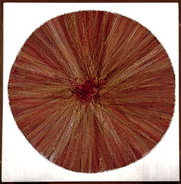
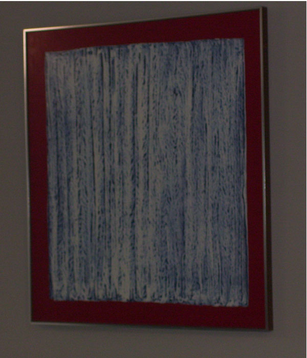

Art Mckay was one of the Regina Five. Regina Five was a group of artists that did abstract paintings. He was one of the artists whose 1961 National Gallery of Canada exhibition brought attention to art in western Canada. Arthur McKay was born September 11th, 1926 in Nipawin, Saskatchewan.
Here is one of his circular paintings, this one is called Flux

Here is another one of Art McKay's circular paintings

Another circular painting, this one is called Effulgent Image, 1961 (click for close up)
A painting titled Impenetrable Image, 1963

A writeup about the Regina Five, with Impenetrable Image centered by fellow Regina Five member's works A Fine Fall, byTed Godwin, and Myth by the Shore, by Ken Lochhead, left and right respectively.
Back to index | Gallery Two | Back to Saskatchewan artist database